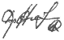

Блюзовый дождь
Листья опали затем, чтоб родиться опять.
Листья не знали, как долго приходится ждать.
Память всем тем, кто решился отдать
Зеленую плоть. Что ж,
Нам остается мечтать
И верить в то, что скажет нам
Блюзовый дождь.
Жизнь спряталась в норы в надежде вырваться вновь.
Жизнь захлопнула шторы в квартирах заплаканных вдов.
Слышишь, как бьется прощальная кровь
В птицах, улетающих прочь.
Мы остаемся без снов,
Но с верой в то, что скажет нам
Блюзовый дождь.
Там голые лапы деревьев ловят ворон.
Там угли костра уж не в силах бороться с дождем.
Там только тень человека с ружьем,
А ты все еще ждешь.
В ожидании нету границ между явью и сном.
И ты веришь в то, что скажет нам
Блюзовый дождь.
09.1990

К оглавлению: | По Алфавиту | По первой строчке | По Датировке|